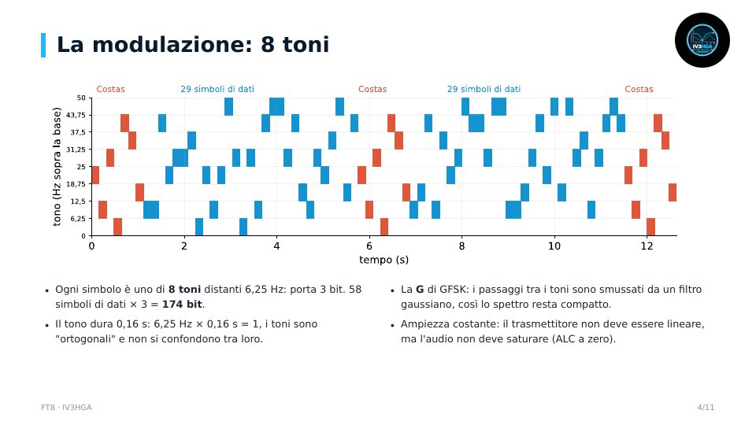

Capitolo 8 · Modulo 1
FT8: come funziona
- Cicli di 15 s e precisione dell'orologio
- 8-GFSK: 8 toni da 6,25 Hz, 50 Hz di banda
- Sincronismo Costas, CRC e LDPC
- Il waterfall, perché funziona a −21 dB e un QSO tipico
Il modo digitale per segnali deboli: cicli di 15 secondi, 8-GFSK, sincronismo Costas, correzione d'errore LDPC e perché si decodifica sotto il rumore.
